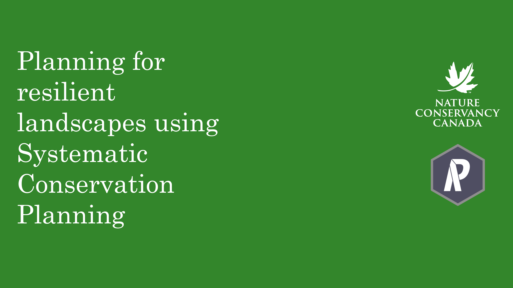

Where to Work is a web-based application for
solving complex conservation scenarios using concepts
of systematic conservation planning.
Where to Work provides a user friendly interface
for developing conservation scenarios.
It utilizes the prioritizr R package to quickly
find the best conservation solutions.